L5 Manage Identities
1 Manage Azure Active Directory (AD)
1-1 Add a Custom Domain
- Purchase a domain from a registrar
- The domain will need to be verified
- Add the DNS information to your registrar
- Only top-level domains are supported
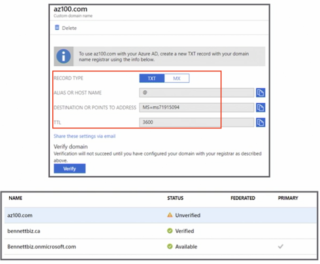
1-2 Azure AD Identity Protection
- Detects potential vulnerabilities
- Handles suspicious actions automatically
- Investigates incidents and resolves them
- Only available in the Premium P2 edition
1-3 Azure AD Join Overview
- Designed for cloud-first organizations
- Single-sign on (SSO)
- Seamless access to on-premises resources
- Allows for enterprise-compliant roaming
- Restricts access to apps from devices compliant with company policy
- Windows 10 (Pro and Enterprise)
1-4 When to Use Azure AD Join
-
Manage groups that are not in Azure AD
- For example, seasonal workers, students, and contractors
-
For BYOD (bring your own device),
- Microsoft recommends using Azure AD registered devices
1-5 Enterprise State Roaming Overview
- Settings and app data are synchronized across devices
- Windows 10 only
- Reduces time needed to configure a new device
- Supports separation of corporate and consumer data in users' cloud accounts
- Content is encrypted at rest in the cloud
- Synced data is retained until it's manually deleted or becomes stale (one year)
1-6 Configure Self-service Password Reset
- Users can change their own passwords without assistance from the help desk
- Password change
- Password reset
- Account unlock
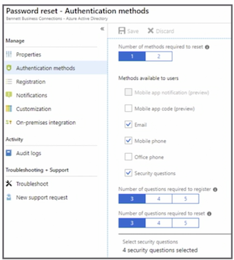
1-7 Conditional Access
- Control access to company resources based on rules
- Condition statement: when this happens
- Control statement: then do this (block or grant)
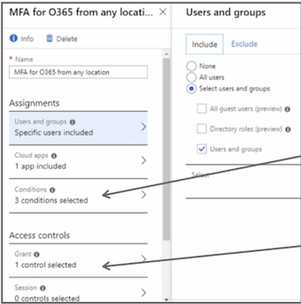
1-8 Manage Multiple Directories
- Each tenant is independent
- What you do in one tenant does not affect another
- A domain name can only be used by a single tenant
- The creator of the tenant is a global admin for the tenant
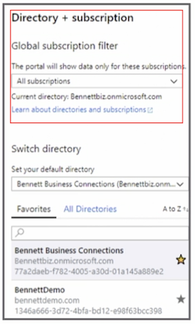
1-9 Perform an Access Review
- Manage group memberships
- Find stale accounts
- Review access to enterprise applications
- Review privileged roles
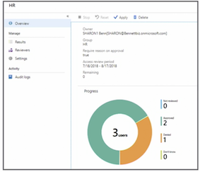
1-10 Key Points
- Know how to configure and implement an access review
- Know how to complete an access review as a user
- Create a conditional access rule
- Review Azure AD Identity Protection in depth
2 Manage Azure AD objects: Users, groups, and devices
2-1 Create Users using the portal
- Name
- Username
- Group membership
- Directory role:
- user
- global administrator
- limited administrator
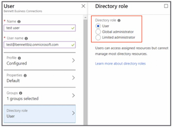
2-2 Create Users Using PowerShell
$PasswordProfile = New-Object -TypeName Microsoft.Open.AzureAD.Model.PasswordProfile
$PasswordProfile.Password = "NewPassword"
New-AzureADUser -DisplayName "Muhammand Garg" -PasswordProfile $PasswordProfile -UserPrincipalName
"MGarg@bennettbiz.onmicrosoft.com" -AccountEnabled $true - MailNickName "MGarb"
2-3 Create Groups using the portal
- Group type: security (grants permission to a group of users) or Office 365 (collaboration)
- Membership type:
- assigned,
- dynamic user,
- dynamic device
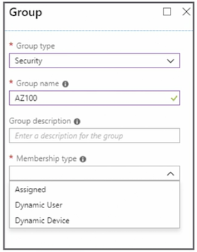
2-4 Dynamic Group
- User or device will be added to a group based on a rule
- Users in the HR department will automatically become members of a specific group
- When the attribute changes, the user or device is automatically removed from the group
In our example, if the user no longer belongs to HR department, they will automatically removed from that group
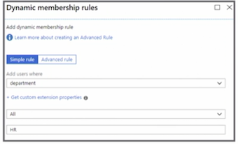
2-5 Create Groups Using PowerShell
#Create Groups
New-AzureADGroup -Description "HR" -DisplayName "HR" -MailEnabled $false -SecurityEnabled $true -MailNickName "HR"
#Add Members
Add-AzureADGroupMember -ObjectId "Group id" -RefObjectId "Owner/Manager/member id"
2-6 Manage Device Settings
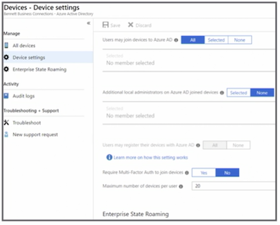
3 Implement and manage hybrid identities
- Sync identities from on-premises to Azure AD
- Express: Single forest topology and password hash synchronization
- Custom installation: Multiple forests or different sign-on option
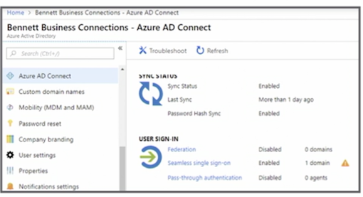
3-1 On-Premises AD Considerations
- Run IdFix to correct errors in Active Directory
- On-premises AD functional level must be Windows Server 2003 or later
- Password writeback will require the DCs (domain controllers) be on Windows Server 2008 R2 or later
- Cannot be installed on an RODC (read-only domain controller)
3-2 Azure AD Connect Server
- Cannot be Windows Server Essentials
- Server core is not supported
- Server must be at least Windows Server 2008
- Password synchronization requires Azure AD Connect be installed on Windows Server 2008 R2 SP1 or later
- SQL Server is required
- SQL Server 2012 Express is installed by default
3-3 Password Synchronization or Hash
- Default option
- Will be used in the Express installation
- Same username and password in Azure and on-premises
- Authentication occurs in the cloud
3-4 Pass-Through Authentication
- Same username and password in Azure and on-premises
- Username and password are authenticated by the on-premises AD
3-5 Federation with AD FS
- Same username and password in Azure and on-premises
- Authentication occurs on the on premises AD FS (Active Directory Federation Services) instance
3-6 Federation with PingFederate
- Same username and password in Azure and on-premises
- Authentication occurs on the on-premises PingFederate instance
3-7 Federation Considerations
- Used in more complex hybrid environments
- Domain join SSO
- Enforcing AD sign-in policy
- Third-party MFA (multi-factor authentication) integration
3-8 Password Sync and Writeback
- Passwords changed in Azure AD writeback to on-premises AD
- Synchronous: no delays in the writeback
- Enforces on-premises AD password policies
- Writeback is not supported for users in an on-premises AD protected group
3-9 Azure AD Connect Health
- Monitors Azure AD Connect sync
- Monitors AD FS
- Monitors AD DS
- Included in Azure AD Connect Tool
- Additional servers need to have Azure AD Connect Health agent installed
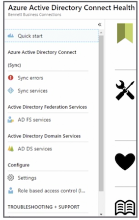
3-10 Key Points
- Understand how to install and configure Azure AD Connect
- Fully understand the different sign-on options
- Choose the correct sign-on option based on a scenario
- Review Azure AD Connect Health
4 Implement Azure Multi-Factor Authentication
4-1 Azure MFA Versions
- MFA in the cloud
- Cloud-only users and apps
- MFA server on-premises
- Hybrid deployments
4-2 Cloud MFA Options
- Multi-Factor Authentication for Office 365
- Multi-Factor Authentication for Azure Active Directory (AD) administrators
- Azure Multi-Factor Authentication (full version)
- Azure AD Premium
4-3 Configure MFA/Bulk Update
- Individual enabling
- Bulk using CSV
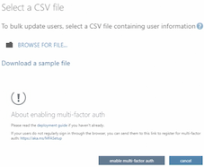
4-4 Fraud Alerts
- User reporting fraud is blocked for 90 days or until administrator unblocks the account
- User can report fraud during two-step verification; 0 is the default
They'll need to enter a specific code
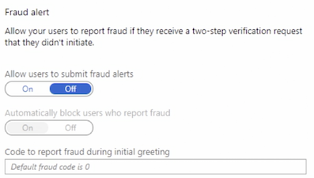
4-5 Configure Bypass
- User can authenticate without two-step verification
- Temporary
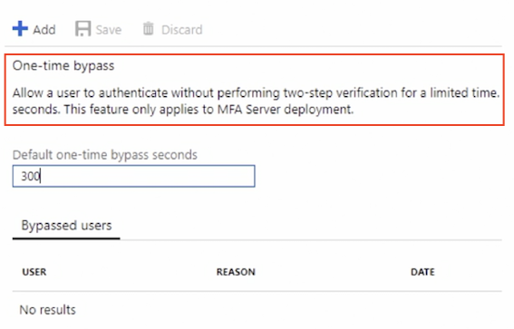
- Use case: When a phone is unable to receive a call
4-6 Trusted IPs
Bypass two-factor if signing in from trusted location
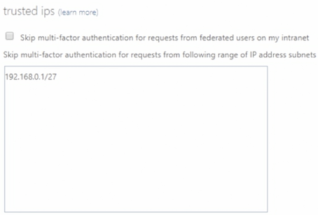
4-7 Verification Methods
- Select verification methods users can use for authentication
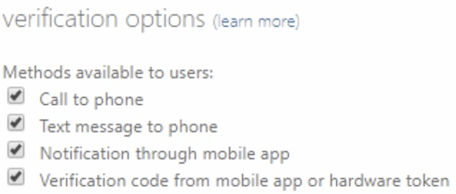
4-8 Key Points
- Know what is covered by the paid and free versions of MFA
- Know the different Microsoft cloud MFA offerings
- Know how to configure MFA